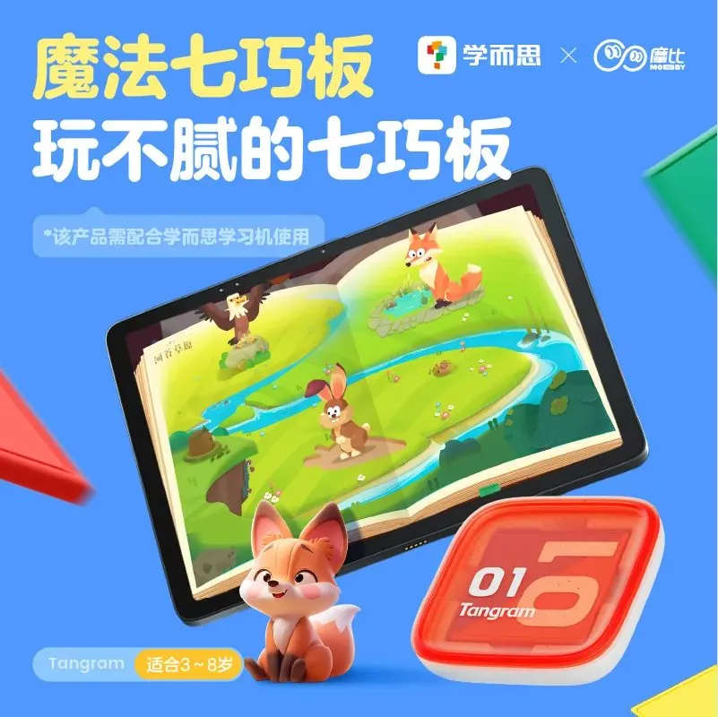

推开门，想法正在成形。
进来，动动手。

挑一件东西，翻开它背后的产品记录。手机上可以左右滑动整间工坊。
故事与产品，是同一条工作线。
从编剧的人物与动机，走向儿童产品的场景、反馈和陪伴关系。下面三份记录，分别展示产品定义、AI 角色体系和亲子阅读方案。
聊聊你的项目 →好未来 / 学而思 · 智能启蒙硬件
摩比魔法七巧板

孩子手里的积木，怎样和屏幕里的冒险连起来？
我的职责与推进
产品策划负责人。参与市场测算、竞品拆解、产品定义、商业与定价策略，以及版本节奏与儿童互动体验协同。
翻看职责记录
围绕摩比魔法七巧板的启蒙场景，与 UI、产品和研发团队协作，从用户体验视角推进儿童互动游戏落地。
场景 / 判断 / 体验
把手里的东西做完整，也把下一步想清楚。